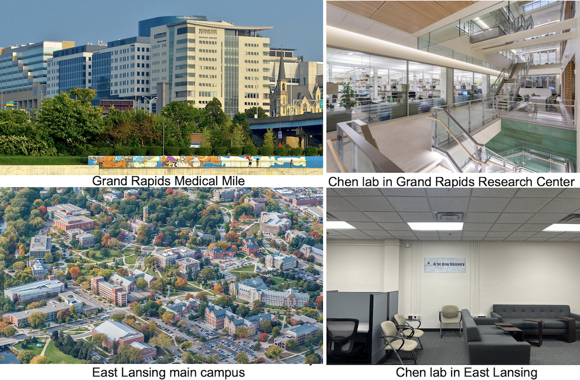

Chen lab resource introduction

PI Dr. Bin Chen was recruited to MSU from the University of California San Francisco through the
MSU Global Impact Initiative in early 2018. The initiative aims to recruit new researchers from the world to focus on the most challenging problems facing human civilization. Dr. Chen holds a primary appointment in the
Department of Pediatrics and Human Development with a secondary appointment in the
Department of Pharmacology and Toxicology in the
College of Human Medicine. Chen also holds an adjunct position in the
Department of Computer Science and Engineering and in the
Department of Epidemiology and Biostatistics.
Founded in 1855, MSU is one of the largest universities in the United States by enrollment, welcoming over 41,000 students across 14 colleges. These colleges offer more than 165 undergraduate areas of study and 76 graduate specializations. With such a vast academic community, Dr. Chen has access to a considerable talent pool for recruitment. MSU boasts a significant infrastructure, employing approximately 3,000 faculty and staff members dedicated to teaching, research, and service, spread over 5,315 acres with more than 400 buildings. Research is a fundamental aspect of the university's academic environment, conducted across all disciplines. The university hosts over 3,000 major research projects, many of which are multidisciplinary, fostering collaboration between engineers, basic scientists, and clinical researchers. A notable achievement of MSU's research endeavors is the discovery and development of
Cisplatin, one of the most widely used anti-cancer drugs.
Dr. Chen has successfully assembled a diverse team comprising postdoctoral scholars, research assistants, undergraduates, graduates, and medical students. The lab is always open to highly motivated trainees, emphasizing a culture of innovation and productivity. Operating as a computational lab, the Chen Lab prioritizes efficient communication and project management, primarily utilizing SLACK. This platform facilitates over a hundred daily exchanges among lab members, enhancing collaboration and efficiency. Specific channels within SLACK are dedicated to various purposes: the lab orientation channel provides essential resources and documents for new trainees, enabling quick integration into lab activities; the lab technique channel acts as an internal forum similar to Stack Overflow, promoting technical knowledge sharing and learning; and the lab paper tracking channel updates members on recent significant publications. Each project benefits from its dedicated discussion channel and a Google Doc for documentation, alongside a specific data folder on AWS cloud and a code repository on GitHub. The lab’s commitment to transparency and reproducibility in research is evident in its policy of releasing all key manuscripts on BioRxiv post-submission, embodying the principles of open data, code, science, and reproducible research.
Every full-time staff member in the Chen Lab is provided with an Apple Mac laptop. The lab actively utilizes cloud-based resources from Amazon Web Services for sequencing analysis and deep learning research, with each significant project having its dedicated instance. This setup allows lab members to efficiently process raw RNA-Seq data and make drug predictions on one instance, while running deep learning modules on another. Additionally, the Chen Lab leverages the
iCER's HPC clusters, which feature 596 compute nodes and over 17,500 cores. These clusters include 90 NVIDIA GPUs and 28 nodes equipped with Xeon Phi processors. For regular computational analysis, the Chen Lab has invested in a buy-in cluster equipped with more than 128 GB of RAM. Furthermore, the lab has established its own GPU cluster, consisting of 32 GPUs, to support its intensive computational needs.